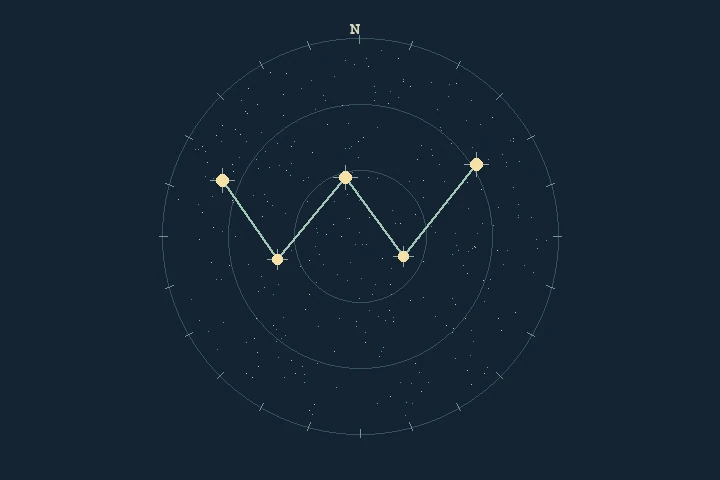

Night Atlas — Portfolio.exe
Night Atlas — Portfolio.exe NIGHT ATLAS
Night
Atlas.
夜空图谱室
先看亮星，再把它们连起来。三张示意星图用不同的折线练习辨认星座轮廓。
STAR PLATES

C:\Studio\Night3 files · v1.0.0
 星座底片 — NightNight Atlas — Portfolio.exe
星座底片 — NightNight Atlas — Portfolio.exe夜空图谱室
先看亮星，再把它们连起来。三张示意星图用不同的折线练习辨认星座轮廓。

星座底片 — Night 电子音乐
电子音乐 植物标本
植物标本 旅行邮票
旅行邮票